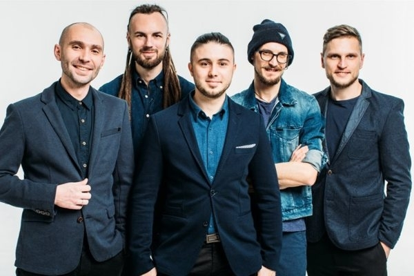

Antitila is one of the most famous Ukrainian pop-rock bands, which in ten years of its existence released six studio albums and covered the way from small concert halls to multi-thousand stadiums.
Antitila owe their name to the song of the same name, which frontman Taras Topolya performed in one of the Kyiv clubs in 2004. The composition tells about opposites that are very different, but cannot do without each other. The philosophical subtext of the song became defining for the team and was firmly established in the name of the band.
Composition of the group
Taras Topolia
Sergey Vusik
Dmitry Vodovozov
Dmytro Zholud
Mykhailo Chirko

The first "Chance" and open-air tour of the cities of Ukraine
In 2007 Antibodies took part in the popular television project "Chance". Unlike other participants, the musicians performed their own composition "I will not forget the first night", which literally blew up the air. The team did not win the show, but received much more - the love of fans and the opportunity to conquer the big stage. In the same year, the guys went on their debut open-air tour of the cities of Ukraine and debuted with concerts in Kyiv, Chernihiv, Uman, Sumy and Cherkasy.
Official start
The year 2008 is considered the official founding date of the band. It was then that Antibodies experienced a reboot and began their active musical activity. In the summer, the team signed the first production contract with "Catapult Music", and in the fall released the debut record "BuduVudu", consisting of 16 songs. The clip for the composition of the same name conquered the top of the hit parade on the M1 channel in two weeks and brought the musicians all-Ukrainian popularity.
The best songs of Antitila band
The songs of the band Antitila occupy the first lines in the hit parades on radio and music TV channels. "ТDME", "Virila", "Seize the moment", "Everything is beautiful", "BuduVudu" - the lyrics of these hits are known and sung by tens of thousands of music lovers.